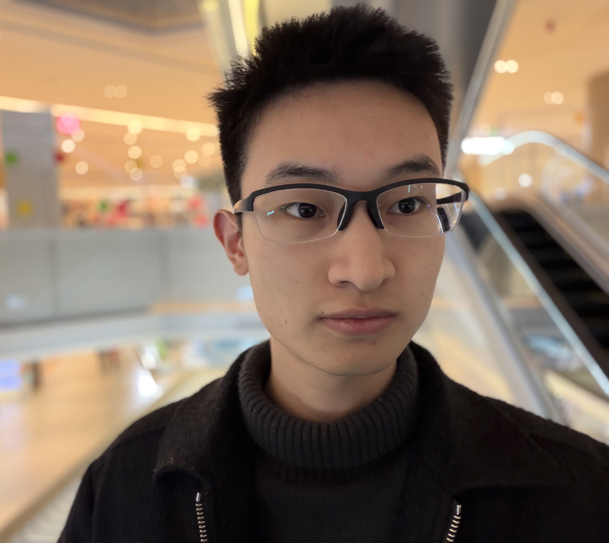

IEEE RA-L 2026
ImplicitRDP: An End-to-End Visual-Force Diffusion Policy with Structural Slow-Fast Learning
A unified policy combining visual planning with high-frequency force feedback for reactive and temporally coherent robot control.
Incoming Ph.D. Student · Robot Manipulation & Embodied AI
I will begin my Ph.D. at Shanghai Jiao Tong University in September 2026, advised by Prof. Cewu Lu. My research focuses on robot learning and multimodal policies for contact-rich manipulation.

I received my bachelor's degree from Shanghai Jiao Tong University in 2026. In September 2026, I will join the School of Artificial Intelligence at Shanghai Jiao Tong University as a Ph.D. student, advised by Prof. Cewu Lu.
I am also affiliated with Shanghai Innovation Institute. I am interested in building robots that can perceive and respond reliably during physical interaction, especially by combining visual information with force feedback.
Research interests: robot manipulation, embodied AI, imitation learning, multimodal learning, and contact-rich interaction.
ImplicitRDP was accepted to IEEE Robotics and Automation Letters (RA-L) 2026.
We released the code and models for ImplicitRDP.
We introduced ImplicitRDP, an end-to-end visual-force diffusion policy.
IEEE RA-L 2026
A unified policy combining visual planning with high-frequency force feedback for reactive and temporally coherent robot control.
Ph.D. Student
School of Artificial Intelligence, Shanghai Jiao Tong University
Advisor: Prof. Cewu Lu · Shanghai Innovation Institute
Bachelor of Engineering
School of Electronic Information and Electrical Engineering, Shanghai Jiao Tong University